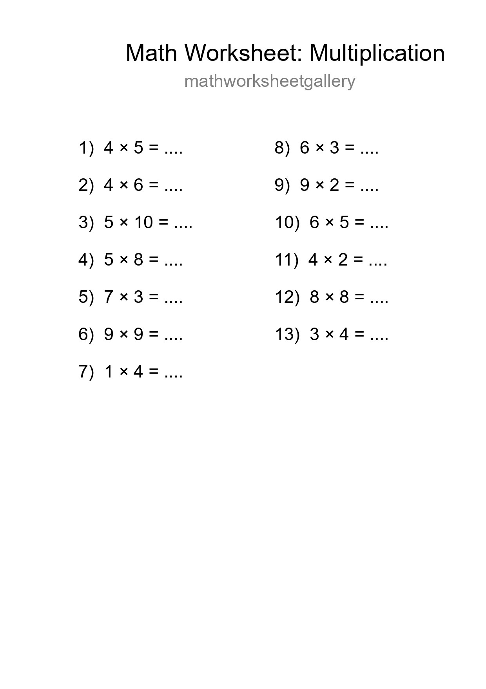
Free 13 Multiplication Math Worksheet For Grade 1 With Answers - Part 8
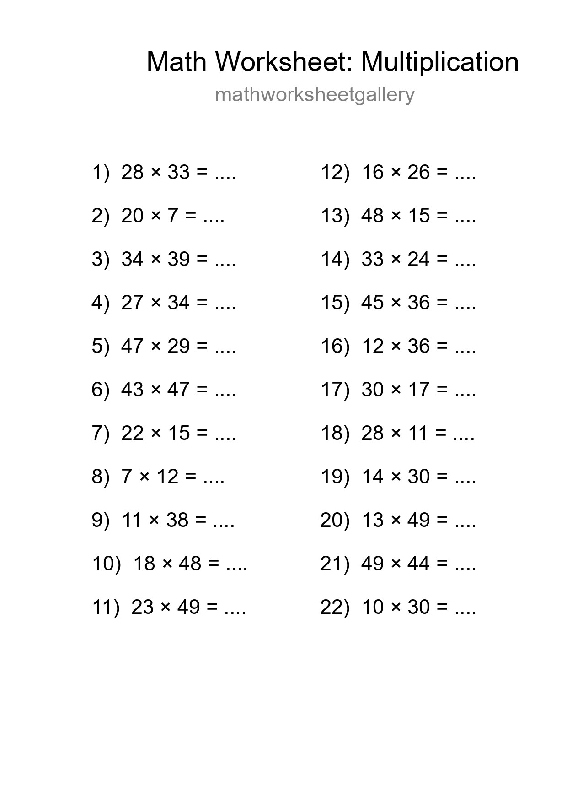
Free 22 Multiplication Math Worksheet For Grade 2 With Answers - Part 20
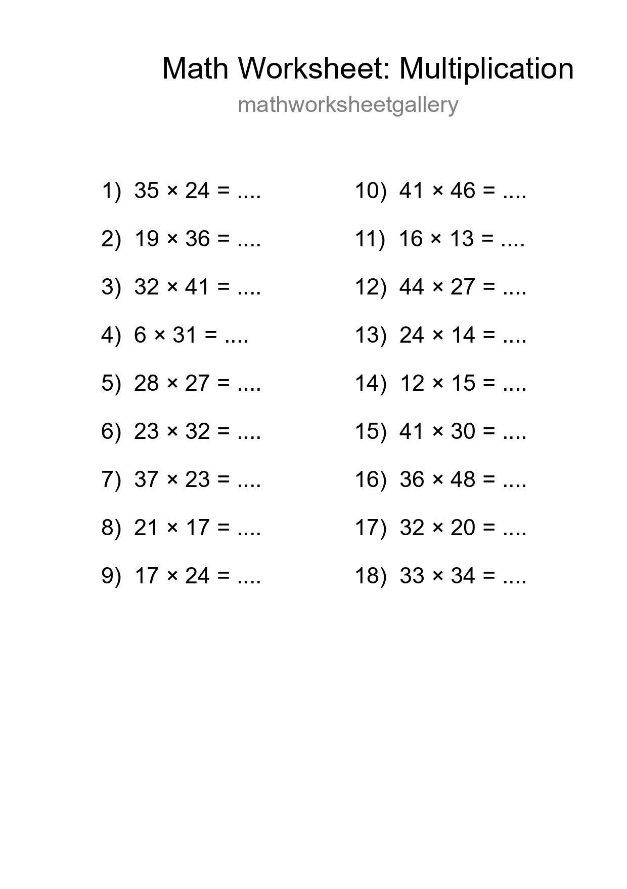
Grade 2 Multiplication Practice Worksheet (18 Problems) - Part 32
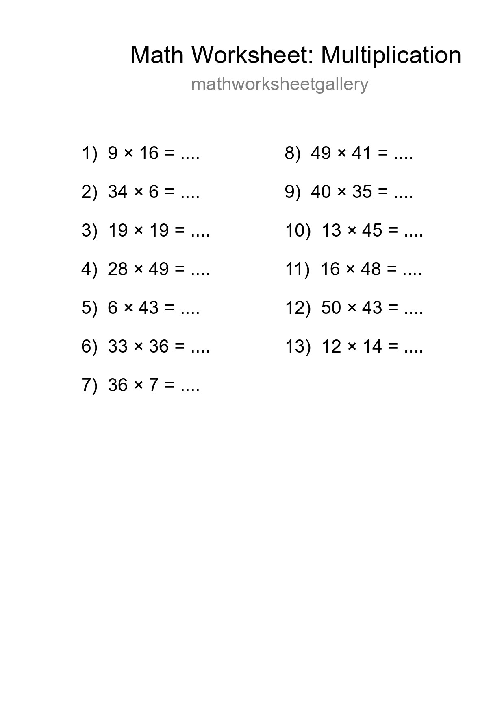
Printable Free 13 Multiplication Math Worksheet For Grade 2 - Part 44
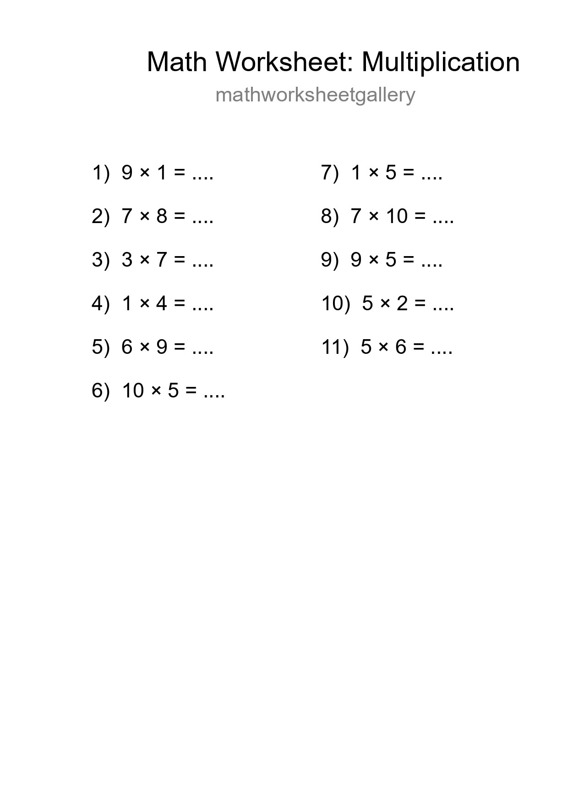
Free 11 Multiplication Math Worksheet For Grade 1 With Answers - Part 56
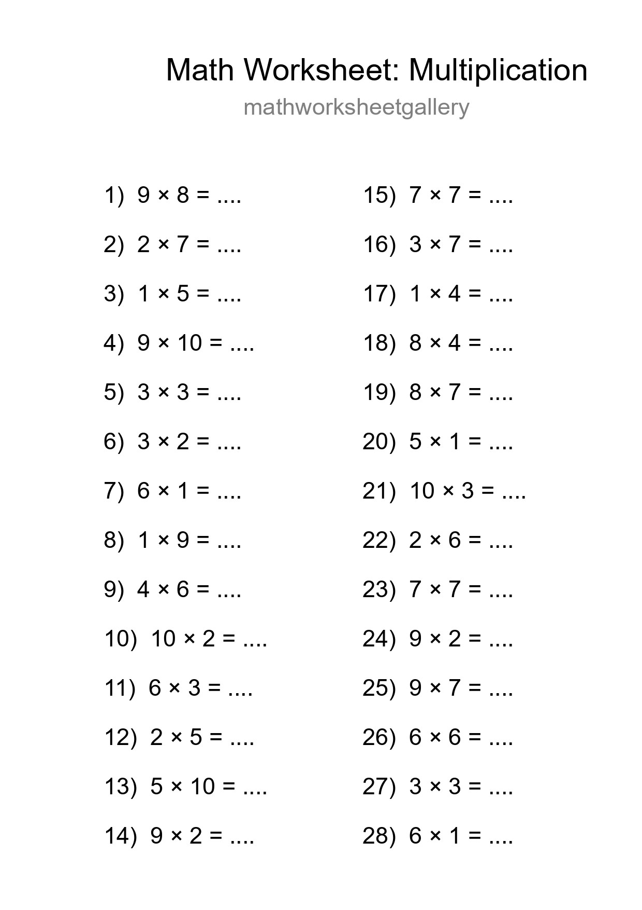
Free 28 Multiplication Math Worksheet For Grade 1 - Part 68
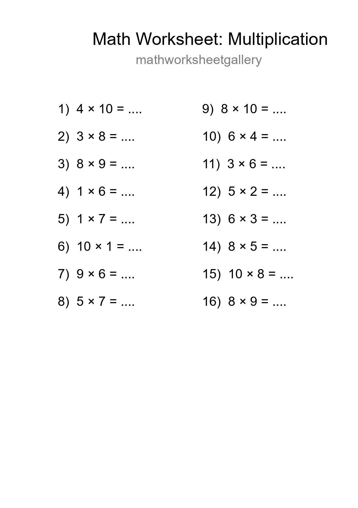
Grade 1 Multiplication Practice Worksheet (16 Problems) - Part 80
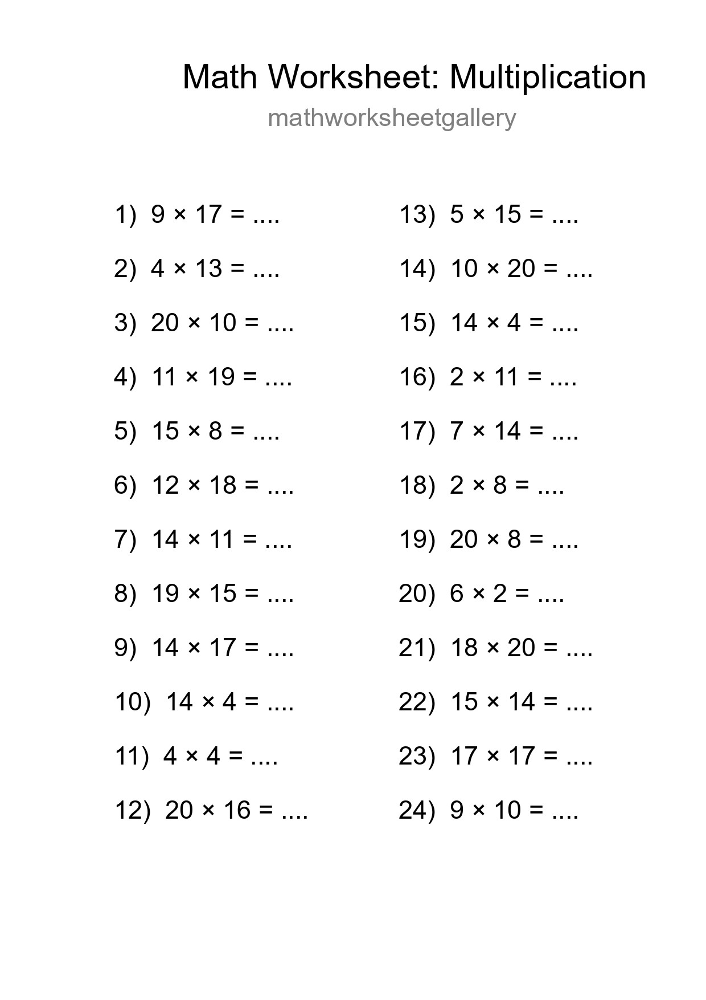
Free 24 Multiplication Math Worksheet For Grade 2 - Part 92

Free 26 Multiplication Math Worksheet For Grade 2 With Answers - Part 104

Printable Free 16 Multiplication Math Worksheet For Grade 2 - Part 116

Printable Free 16 Multiplication Math Worksheet For Grade 2 - Part 128

Printable Free 15 Multiplication Math Worksheet For Grade 1 - Part 140
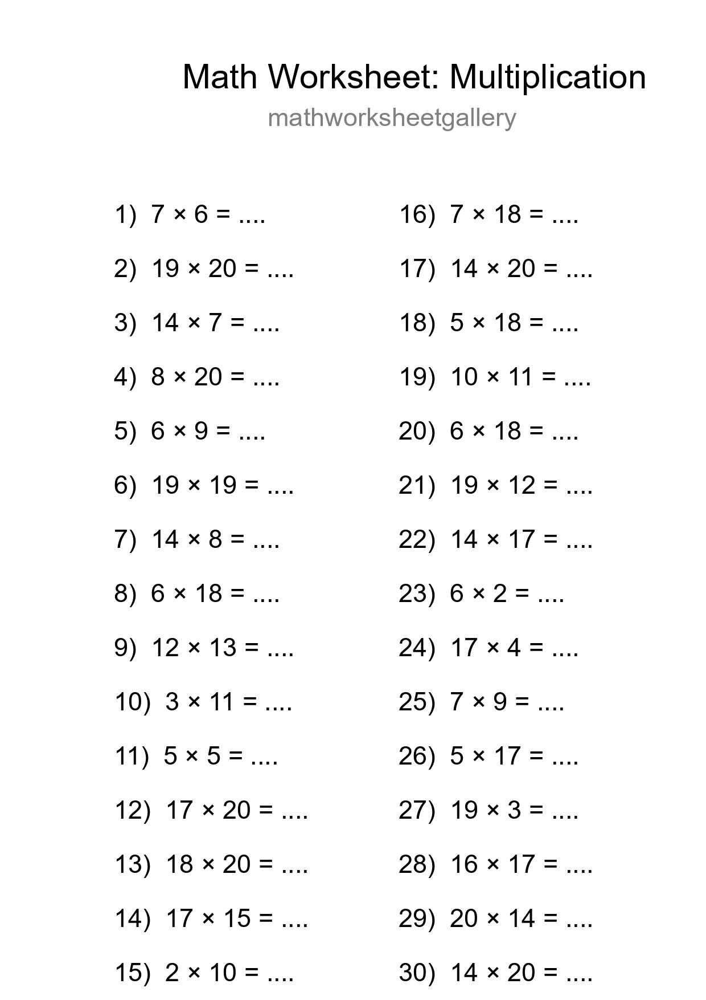
Printable Free 30 Multiplication Math Worksheet For Grade 2 - Part 152
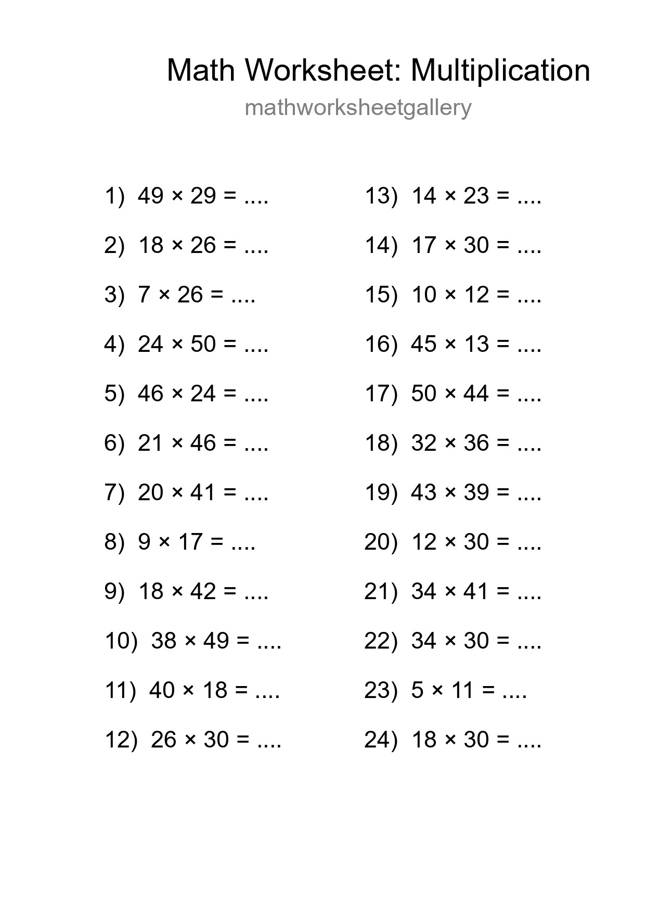
Free 24 Multiplication Math Worksheet For Grade 2 With Answers - Part 164
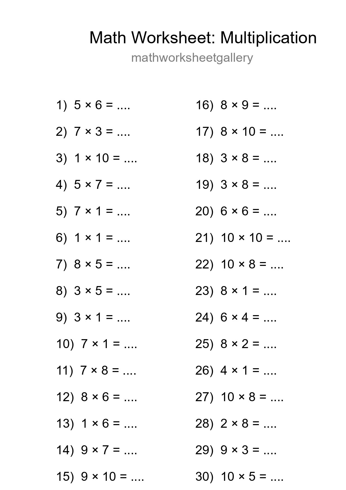
Free 30 Multiplication Math Worksheet For Grade 1 With Answers - Part 176
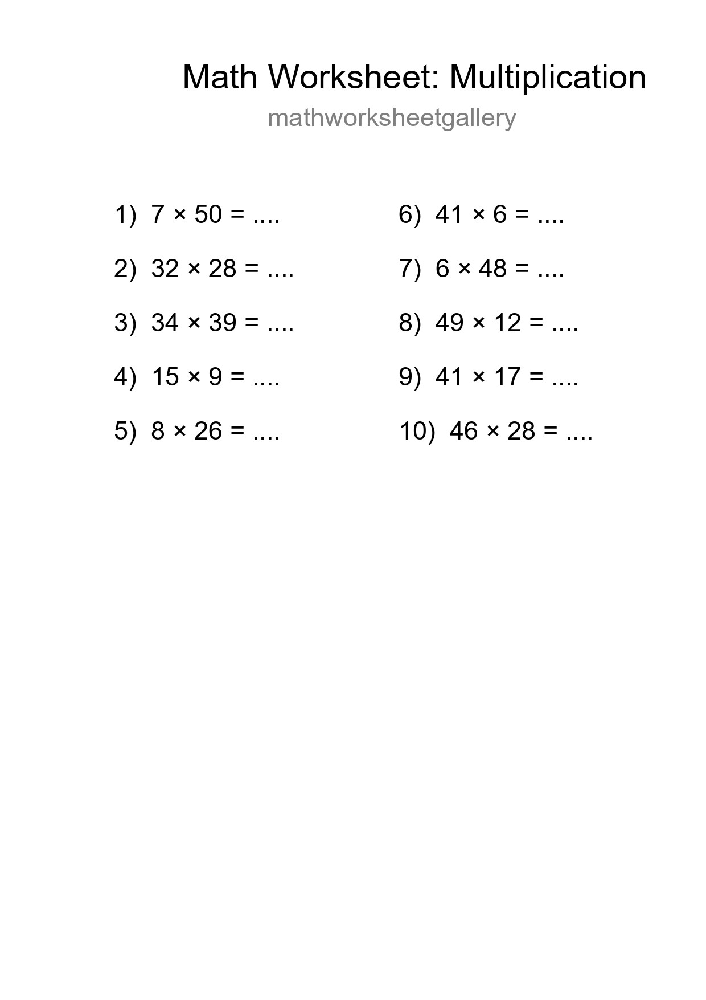
Grade 2 Multiplication Practice Worksheet (10 Problems) - Part 188
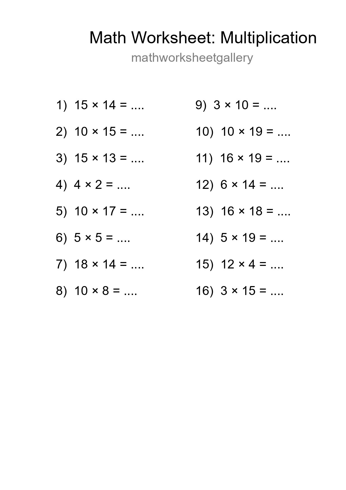